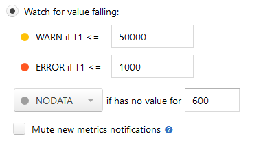

Dealing with NODATA¶
If you have a simple trigger (like the one described in Simple Threshold Trigger), you probably know what happens when a metric has a very high or a very low value. Free disk space is too low? You get a notification.
But what if your metric has no value? Literally, what if Moira is not receiving any data for your metric? How can you know, whether you have enough disk space left or not? In this case, a trigger setting defines the behavior:
{kind=link}
When Moira hasn’t been receiving data for more than default 600 seconds, it will set a special NODATA state for this metric. You can set any other state or change time delay here. For example, if you have an error metric, and no data means no errors, you should set this to OK.
Note
Checkbox Mute new metrics notifications defines whether Moira should notify you about new metrics or mute those notifications.
If box is unchecked, Moira will send you NODATA → OK event for every new metric in the trigger.
Muting notifications about new metrics could be useful if you have trigger with lots of metric in it.
You can also select DEL here to automatically delete all metrics that no longer provide data. A simple use case is when you often rename metrics and Moira quickly becomes flooded with old irrelevant metric names.
Warning
DEL is a dangerous setting, you can easily miss a real notification if your system stops sending metric data.
You will receive notifications when your metric goes in and out of NODATA state, just like any other state.